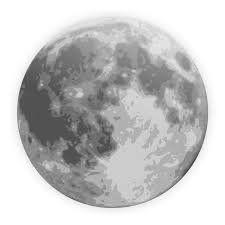

How did the Moon get its Craters?
To start this experiment, you're going to need these materials:
- Magic mud
- safety goggles
- lab coat (optional)
- Rocks (optional)
Instructions
- First put on your safety equipment, then form the magic mud into a ball
- Then use rocks or your fingers to impale the ball of magic mud
- This is similar to how meteors crashed into the moon's surface making its craters
- Celebrate! now that you know how the moon's craters were made